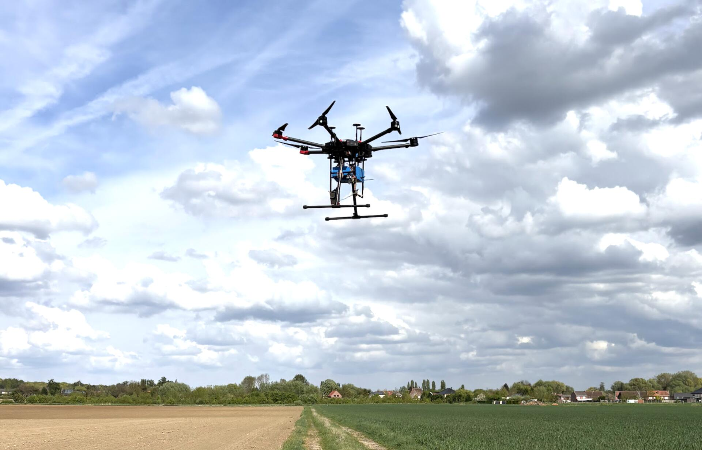

Projects
Wrote a review paper on different ways to detect drones with a focus on spiking neural networks. Fine tuned several spiking neural network architectures (Spiking YOLOv8, Spiking SSD ...) on a fraction of the FRED dataset for drone detection. Achieved 92% accuracy with a 69M parameters model .

Top 3 solution for a multimodal Kaggle competition retrieving 3D motion capture sequences from text. Designed a parameter-efficient dual-encoder using Contrastive Learning (Symmetric InfoNCE): a partially fine-tuned MPNet for text and a BiGRU with Attention Pooling for motion. Engineered for robustness with a 256 effective batch size, Exponential Moving Average (EMA), Test-Time Augmentation (temporal crops, person swaps), and Weighted Rank Blending (Borda count).

Designed and developed a low-cost autonomous embedded system (< €150) mounted on a drone for real-time ozone concentration measurement using an ESP8266 microcontroller. Integrated electrochemical ozone sensor (SEN0321), GPS module, SD card for local logging, and Wi-Fi connectivity to transmit data to a remote server built with Flask + InfluxDB + Grafana. Personally handled the full hardware design, wiring, embedded software development, and network integration. Achieved ~80% correlation with a professional €3000 reference sensor, demonstrating high reliability, energy autonomy, and lightweight design for drone deployment.
Played around to see how well a fine-tuned pose estimation model (YOLO-Pose) can classify different types of punches (jab, cross, hook, uppercut). Demo video on the github repo.